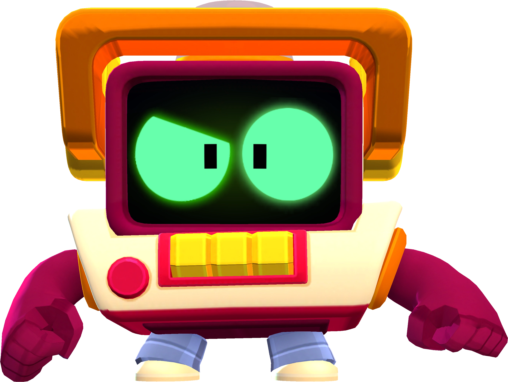

1: La chaussette de Spike est un easter egg que l'on retrouve dans chaque passe de combat. Il suffit de défiler notre écran de la gauche vers la droite pour découvrir une chaussette cachée.
2: Le jeu caché d'Arkad est un secret que peu de personnes ont connu. Quelques temps après la sortie du nouveau personnage "Arkad", on pouvait cliquer au milieu du personnage et nous étions transportés dans plusieurs mini-jeux cachés.
3: Pam œuf est une blague créée par Brawl Stars le jour du 1er avril 2019. Le personnage du nom de "Pam" avait été modifié avec une tête d'œuf.
4: Les remodelages des personnages, pour moderniser leur jeu, Brawl Stars a changé légèrement quelques personnages pour les rendre plus jolis esthétiquement.
5: La caméra dans Brawl Stars est le secret le plus grand ajouté au jeu. Elle apparaissait pendant 3 semaines en haut à droite de notre jeu dans le menu. On pouvait cliquer dessus et atterrir dans un bureau avec des écrans de caméras, un journal au milieu nous racontait le quotidien de la personne qui travaille ici et chaque jour le journal se remplissait avec une nouvelle page. L'étrange machine à gauche est un serveur qui renferme des fichiers cryptés, si l'on trouvait les bons codes, nous pouvions accéder à des archives vidéos. Mais que surveillaient les caméras ? La réponse est très simple : le "Stars Park" qui est l'endroit où se passe le jeu.
6: La radio Brawl Stars était un live sur YouTube diffusé par Brawl Stars pendant 2 semaines, il est à ce jour encore irrésolu. La plupart du temps rien ne se passait puis un mystérieux personnage se mettait à parler de temps en temps, mais les phrases qu'il prononçait sont confuses. La seule chose que la communauté a découverte est que le personnage qui nous parlait n'était autre que "Gaël".
7: Des mystérieux personnages cachés dans le fond d'écran de lancement de notre jeu. En regardant attentivement, on peut observer des silhouettes mystérieuses.
8: Rt un "Brawler" pas comme les autres. Il est un personnage assez mystérieux. On apprend dans son histoire qu'il est chargé de surveiller les autres personnages du jeu. Mais pour quelle raison ? De plus, parmi ses répliques, il y a un son bizarre qu'il peut produire qui, de plus, est l'un des sons que produisait la radio. Il y aurait un lien entre les deux ? C'est probable.

9: Mr. P et Buzz ont tous les deux une fermeture éclair dans leur dos ; ils seraient donc des costumes. Mais qui se cache donc dedans ?
10: Djinn et Mr. P ont tous les deux un rire qui se ressemble et ils font à peu près la même taille. Serait-il la même personne ? Serait-ce Djinn qui se cache dans le costume de Mr. P ?